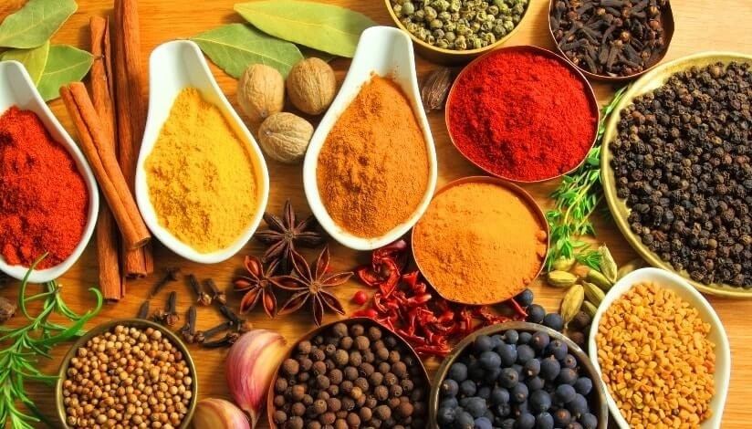
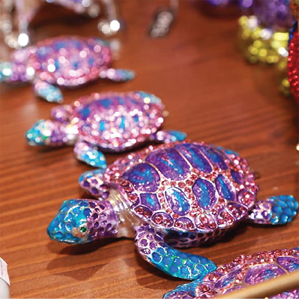
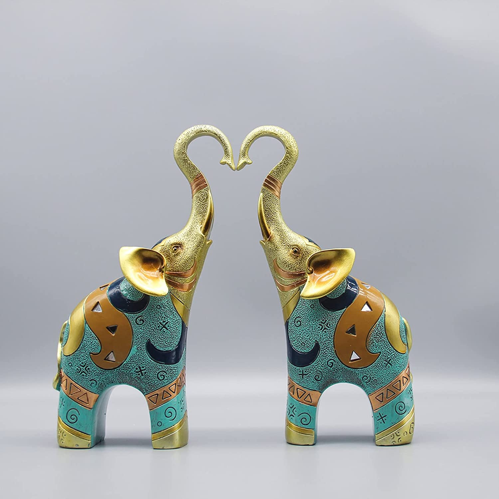
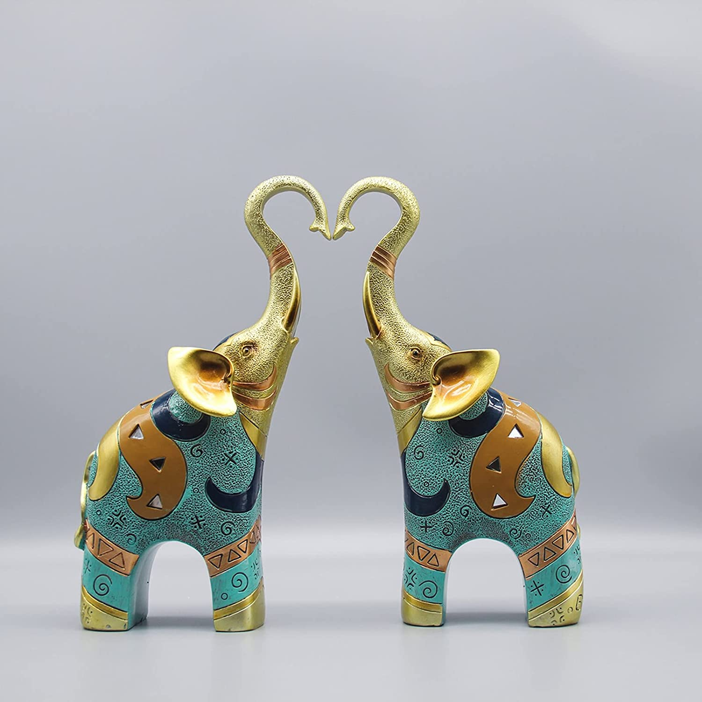
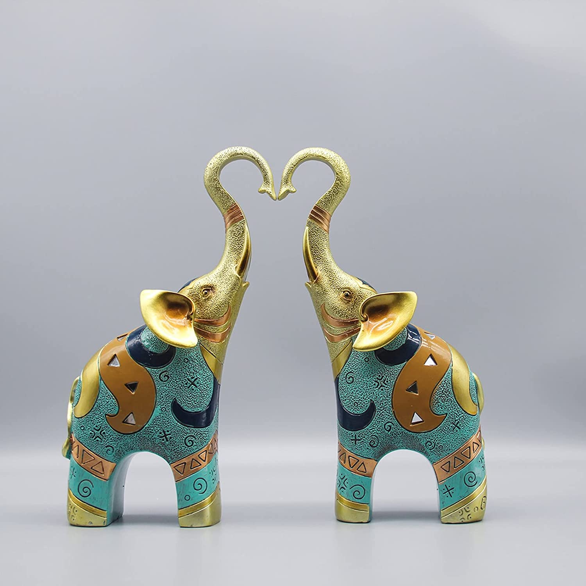
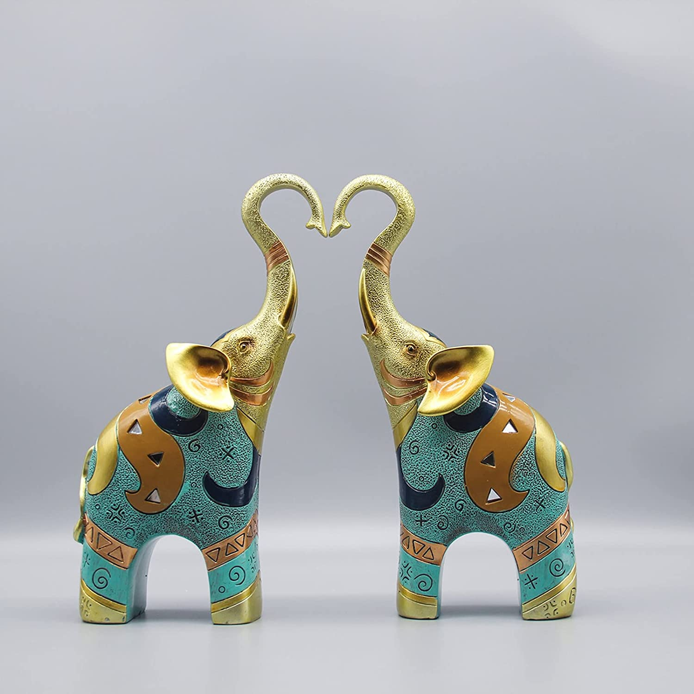

Authenticity at Your Fingertips
Support Local Businesses and Take a Piece of our Culture Home!
 
 



At TURTLE PARADISE, we are dedicated to the conservation and protection of endangered sea turtles.
Your generous support can make a significant impact on our efforts to save these incredible creatures and their fragile habitats.
Here's why your donation matters:
1. Saving Endangered Species:
Sea turtles are facing numerous threats, including habitat loss, pollution, and illegal trade.
Your donation will directly contribute to safeguarding and preserving these magnificent creatures for future generations.
Habitat Restoration: Our turtle hatcheries work tirelessly to restore and protect nesting areas along the coast.
With your donation, we can create safe environments for nesting turtles, ensuring the survival of their eggs and the successful hatching of hatchlings.
2. Rehabilitation and Release:
Injured or sick sea turtles often find refuge in our hatcheries.
Your donation will help fund the necessary care, medical treatments, and rehabilitation efforts to give these turtles a second chance at life before releasing them back into their natural habitats.
3. Education and Awareness:
We believe that education plays a vital role in fostering a sense of responsibility and inspiring change.
Your donation will support our educational programs, allowing us to raise awareness about sea turtle conservation, conduct workshops, and engage with local communities to promote sustainable practices.